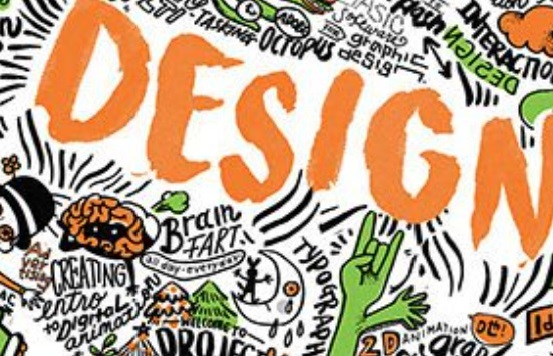

Lehman College Computer Graphics and Imaging B.S. The Computer Graphics and Imaging program offers courses covering web design, imaging, 3-D modeling, animation, interactivity, and broadcast design, preparing students for careers as well as graduate study in these fields.
Borough of Manhattan Community College Animation and Motion Graphics A.S. The Animation and Motion Graphics program provides students with the fundamentals of two- and three-dimensional (2D and 3D) animation, motion graphics, and special effects for advertising campaigns, video games, movies, and television.
Hostos Community College Digital Design & Animation A.S. Through lectures and studio-based classes the Digital Design and Animation Program provides students with a strong foundation for future occupations in motion graphics, animation, graphic design and/or web design.
Kingsborough Community College Animation A.S. The Animation concentration is part of the Graphic Design and Illustration major. Students learn traditional, hand-drawn animation in a digital environment, as well as storyboarding and 3D animation.
Queens College Design B.F.A. Queens College's Design program combines knowledgeable faculty with industry standard software and the creativity of a studio-based learning environment. Students choose one of three concentrations: Communication Design, Animation & Illustration or Interaction Design.
Lehman College Computer Graphics and Imaging B.S. The Computer Graphics and Imaging program offers courses covering web design, imaging, 3-D modeling, animation, interactivity, and broadcast design, preparing students for careers as well as graduate study in these fields.